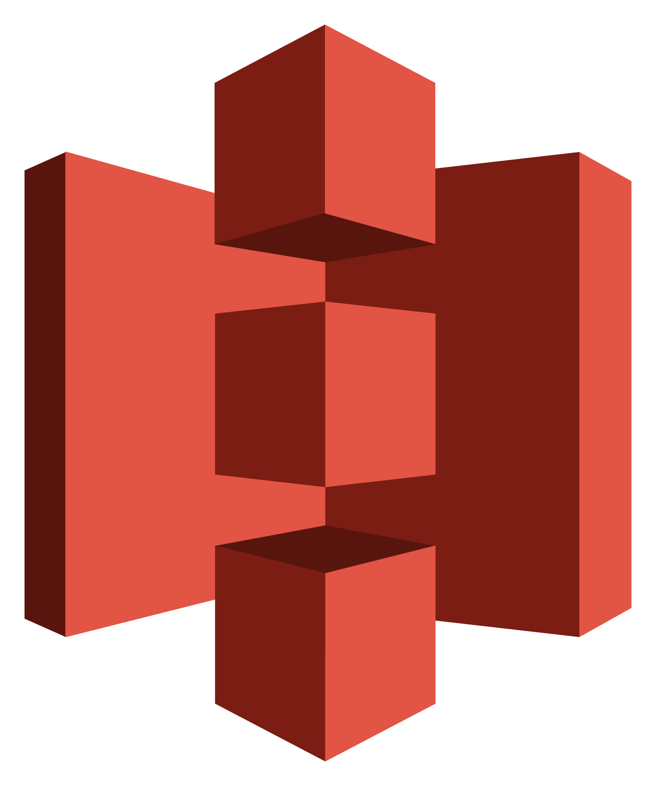
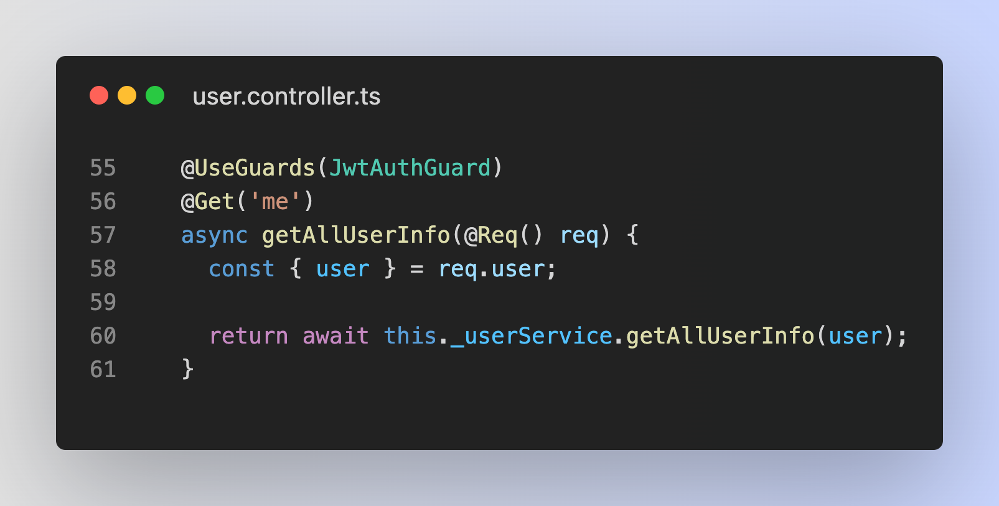
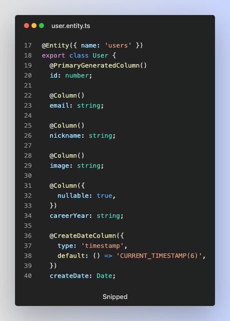
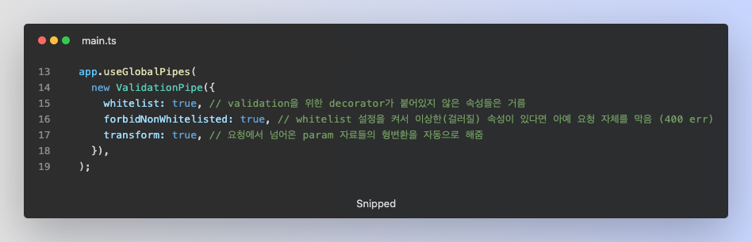
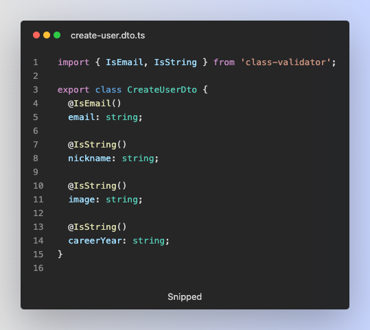

Project information
- 구성원: designer(2명), backend(1명), frontend(2명)
- 프로젝트 기간: 2022.01 ~ (진행중)
- Github: https://github.com/DCPT-KNP/NerdIT-Backend
- API 문서: https://documenter.getpostman.com/view/9352500/VUqpsxcG
- 프론트엔드는 진행중이라 아직 결과물이 없습니다.
Project Stack
프로젝트에 사용된 기술 스택입니다.
Nest.js
express와는 달리 아키텍처 구조가 통일되어 있어 협업이나 프로젝트의 구조를 한 눈에 쉽게 파악할 수 있고, 각 middleware의 기능이 정해져 있으며, life cycle의 순서가 정해져 있기 때문에 이 프레임워크를 채택했습니다.
Typescript
타입스크립트는 자바스크립트를 기반으로한 정적 타입 문법을 추가한 프로그래밍 언어입니다. 때문에 목적에 맞지 않는 타입이나 변수가 있으면 에러를 감지해서 개발할때 편의성을 얻을 수 있어 사용했습니다.
TypeORM
orm은 객체지향적인 코드로 인해 더 직관적이고 로직에 집중할 수 있도록 도와줍니다. 그로 인해 재사용 및 유지보수의 편리성이 증가해 더 쉽게 프로그래밍할 수 있기 때문에 채택했습니다.

AWS S3
프로필 이미지 같은 정적인 데이터를 다루기 위해 이미지 서버를 따로 생성하였습니다.
Docker
함께 협업하는 개발자분들이 서버를 테스트하기 위해 제가 사용했던 환경을 그대로 구축하는 시간을 단축하고 싶었습니다. 이런 불편을 줄이고자 도커 이미지를 만들어 배포하였습니다.
1. 소셜 로그인
소셜 로그인을 도입하기 위해 passport라는 모듈을 활용해 도입했지만, 실제로는 잘 작동하지 않았습니다. 확실하게 구현하기 위해선 소셜 로그인이라는 기술 자체가 어떤 흐름을 가지고 있고, 구현에 있어서 무엇이 필요한지 이해해야 도입할 수 있을거라 생각했습니다. passport-kakao같은 모듈도 결국 kakao가 제공하는 REST API를 통해 구현한 것이기 때문에 백엔드에서는 passport 모듈은 사용하지 않고 REST API를 통해 구현했습니다. 코드 : https://github.com/DCPT-KNP/NerdIT-Backend/blob/main/src/auth/auth.service.ts#L75


2. Auth Guard 구현
컨트롤러를 통해 들어오는 요청에 Guard를 걸어놓아 api를 요청하는 유저가 api를 요청할 자격이 있는지, 또는 유효한 유저인지 판별합니다. 미들웨어를 사용할 수도 있지만, 미들웨어는 next()이후로 어떤 핸들러가 실행될지 모르기 때문에 이 단점을 보완한 가드를 적용했습니다. 코드 : https://github.com/DCPT-KNP/NerdIT-Backend/blob/main/src/auth/guards/jwt-auth.guard.ts

3. TypeORM을 활용한 Entity 관리
entities 폴더에 각 테이블의 정보가 담긴 object를 생성하였습니다. orm으로 만든 객체를 활용해 객체지향적인 코드를 구성할 수 있었고, 쿼리 작성이나 데이터 관리에 대한 시간을 단축시켜 빠르게 구현할 수 있었습니다. 코드 : https://github.com/DCPT-KNP/NerdIT-Backend/blob/main/src/entities/user.entity.ts

4. Docker 이미지 생성 후 테스트용 서버 배포
Docker를 사용하기 전, 프론트에서 서버를 실행하기 위해 DB나 Node.js의 버전에 맞게 환경을 구축해야했지만, 이번 프로젝트에서는 Docker 사용하여 프론트엔드 개발자 분들이 백엔드 환경을 따로 구축하지 않아도 사용 가능한 환경을 제공했습니다. 간단한 파일 작성으로 쉽게 환경을 제공할 수 있고 pull하기만하면 쉽게 사용할 수 있다는 장점을 알았습니다. 코드 : https://github.com/DCPT-KNP/NerdIT-Backend/blob/main/docker-compose.test.yml
5. DTO를 활용하여 클라이언트와 서버 간 데이터 유효성 검사
express에서는 클라이언트로부터 body 데이터를 받으면, controller에서 필요없거나 유효한 데이터가 있는지 검사하는 로직을 직접 구현해야합니다. 매번 구현하는 것은 비효율적이므로 DTO class를 만들어주었고, Nest.js에서 추천하는 class-validator라는 모듈로 DTO 유효성을 검사했습니다. client요청이 controller에 바로 전달되기전 검사해야하므로 서버 애플리케이션 전체에 validation pipe를 설정해두었습니다. 코드 : https://github.com/DCPT-KNP/NerdIT-Backend/blob/main/src/user/dto/create-user.dto.ts

